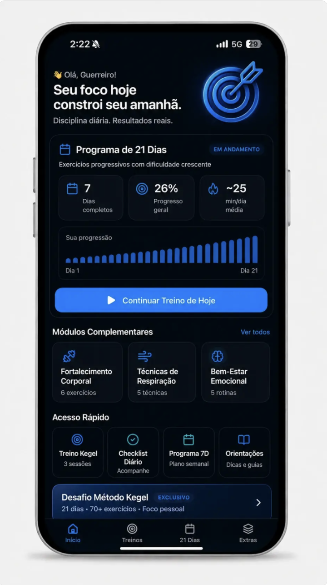
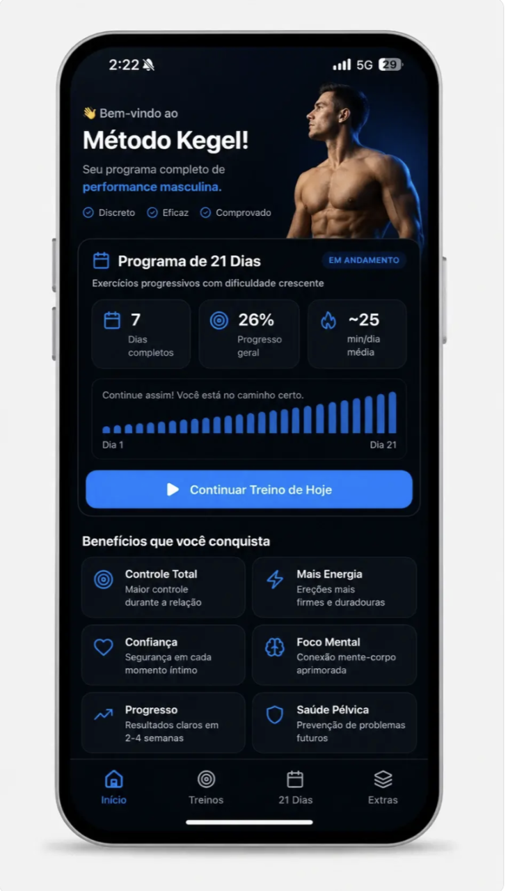
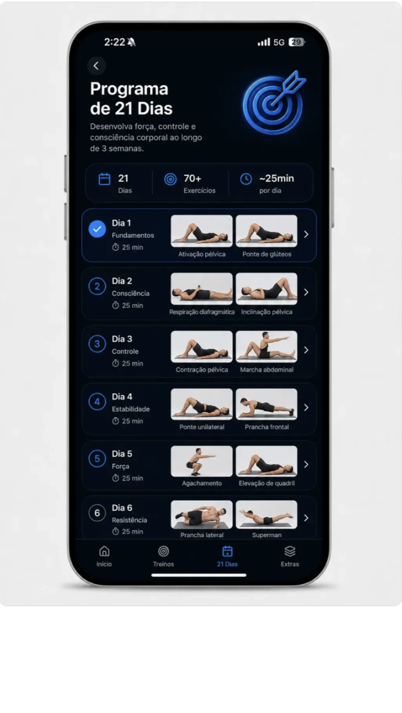
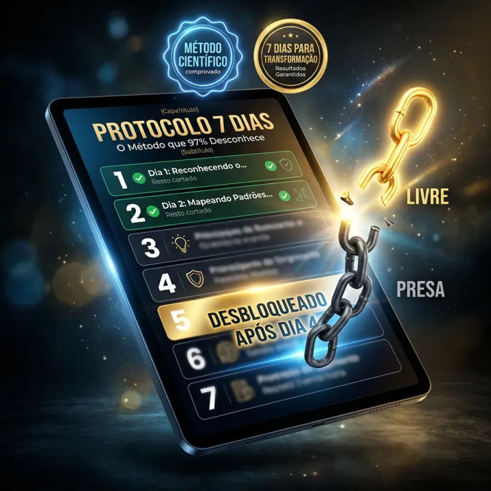
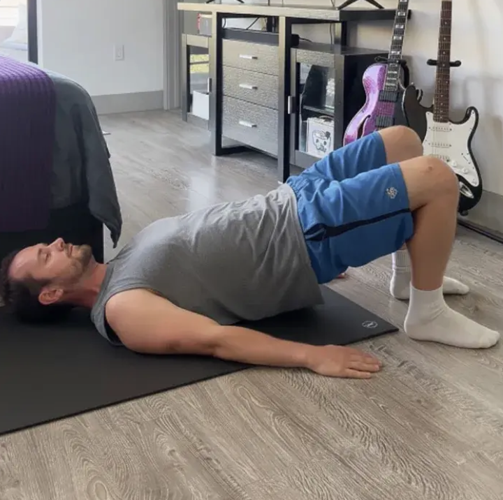
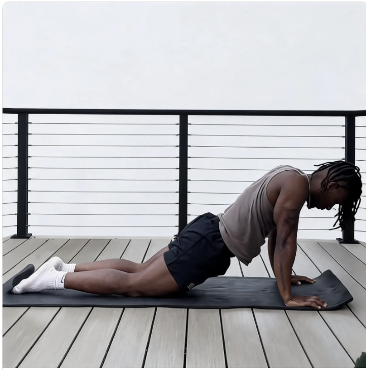
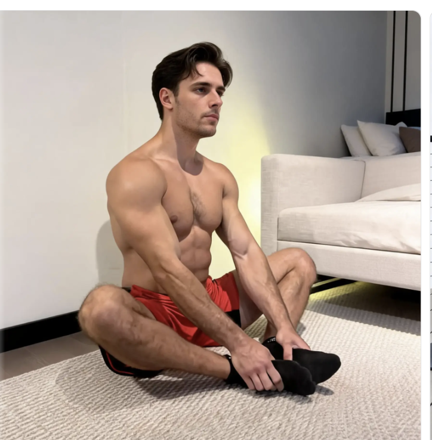
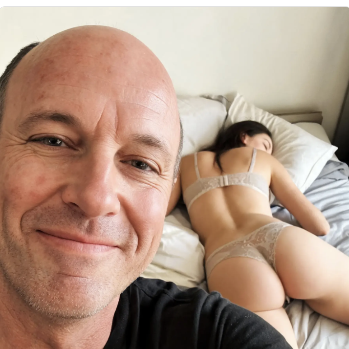
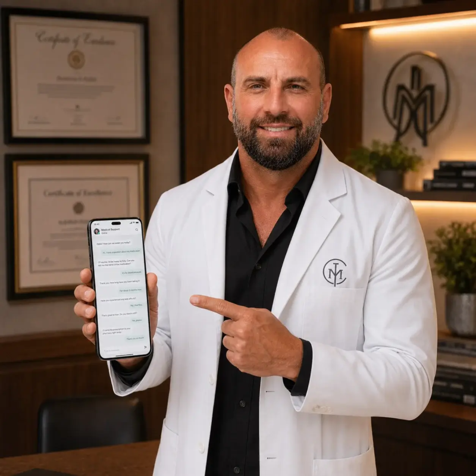

"Já tinha tentado de tudo, Viagra, suplemento natural, terapia, até bomba peniana. Nada funcionou de verdade. As Técnicas de Kegel foram a primeira coisa que entregou o que prometeu. Em 4 semanas comecei a durar 3 vezes mais e a ereção ficou muito mais grossa e firme. Pela primeira vez senti que o problema tinha solução real."
⭐⭐⭐⭐⭐ — Paulo, 49 anos

"Achei que era mais uma promessa, mas em poucas semanas já senti diferença no controle. Hoje duro muito mais e minha confiança na cama voltou. Faço os treinos em casa, sem ninguém saber."
⭐⭐⭐⭐⭐ — Marcelo, 38 anos

"Eu terminava rápido demais e isso estava acabando com meus relacionamentos. Com os exercícios de Kegel aprendi a controlar de verdade. São só alguns minutos por dia e o resultado é real."
⭐⭐⭐⭐⭐ — Rafael, 29 anos

"Depois dos 50 achei que era idade e que não tinha mais jeito. Me enganei. A firmeza voltou e minha esposa percebeu a diferença. Melhor decisão que tomei."
⭐⭐⭐⭐⭐ — Carlos, 54 anos
Um método cientificamente comprovado e acessível, criado por especialistas para melhorar sua saúde íntima.
Exercícios personalizados de acordo com seu objetivo e nível atual, para resultados reais.
Sessões rápidas e discretas que cabem na sua rotina, em qualquer lugar.
O programa evolui semana a semana junto com seu progresso pessoal.
Acompanhe seus avanços, mantenha a motivação e veja resultados reais em poucas semanas.

Suporte 7 dias por semana
Nossa equipe está disponível todos os dias para te ajudar a tirar o máximo do seu plano.
Acreditamos que o nosso plano pode funcionar para si e obterá resultados visíveis dentro de 4 semanas!
Estamos até prontos para devolver o seu dinheiro se não vir resultados visíveis e puder demonstrar que seguiu o nosso plano